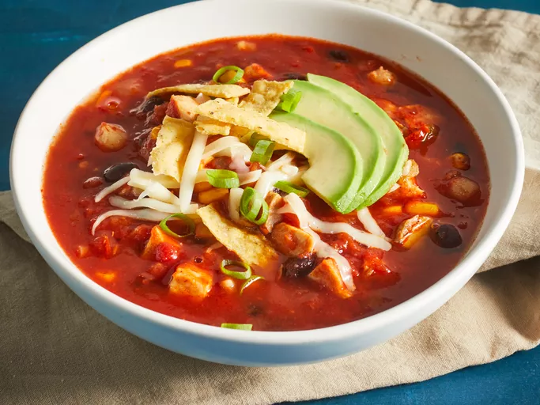

Tortilla Soup

Description
This comforting chicken tortilla soup with shredded chicken,
black beans, and corn is quick to make, full of flavor, and very filling!
Garnish with chopped fresh avocado, Monterey Jack cheese,
crushed tortilla chips, and green onion.
Ingredients
- 1 tablespoon olive oil
- 1 onion, chopped
- 3 minced cloves of garlic
- 1 can crushed tomatoes
- 1 can condensed chicken broth
- 1 and 1/4 cups water
- The rest of the ingredients are left to taste
Steps
- Gather all ingredients
- Heat oil in a stockpot over medium heat.
Add onion and garlic; sauté until soft, about 5 minutes
- Stirr in crushed tomatoes, condensed broth and water; bring to a boil.
Reduce heat and simmer for 5 to 10 minutes
- Stirr in the rest of the ingredients and simmer for 10 minutes
- Serve!